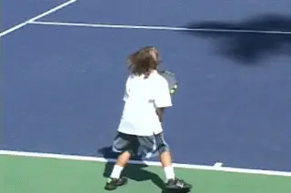
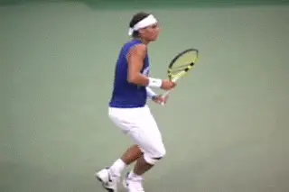
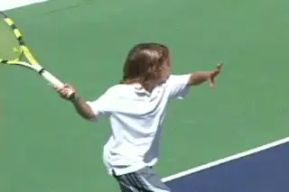
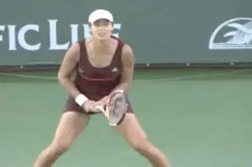
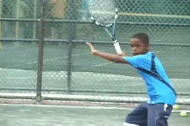
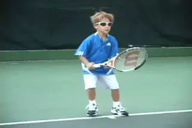
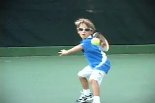
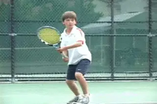

Starting Kids Right: The Forehand¶
Rick Macci¶

A player's technical foundation lasts a lifetime, for better or worse.
Starting your child out right. That's the key to what's going to happen down the road. Unfortunately, it's probably the most neglected part of development.
The foundation laid down when kids first start out is going to last a lifetime, for better or worse. So if you've got a child in tennis and that child is 5, 6, 8, or 10, it's important to understand this is a journey.
It's not how good you are when you're 10, or 12, or even 14. It's what your ultimate objective is. Maybe as a player you want to play high school tennis, or college tennis. Or maybe you want to be the real deal and try pro tennis. \ Any way you slice it, it's a journey and you're constantly building blocks.
Tennis development isn't a sprint, it's a marathon. That's why we call it Junior Development, not Junior Final Destination.
In the first article in this series we took a look at the first building block--attitude. (link)
**Attitude underlies the whole process. **
For the process to succeed you need an incredible amount of motivation.
You've got to make it fun.
You've got to make kids feel like they can jump over that fence behind them. You've got to make them feel like they can do anything. They have to want to do it. You've got to want to make them love it. So it can't be so serious and so negative that they're not going to respond.

Let's not fall into the trap of trying to creating 5 year olds with grips like Nadal.
Critical Technique
Attitude is the prerequisite. But the technical part is equally critical. So now, in this second article, let's start to look at that, beginning with the forehand.
We all know the "modern" forehand, especially on the men's side, is dominated more and more by extreme grips and heavy spin. But at the age of 5 or 6 it's not about trying to create miniature pro players with grips like Rafael Nadal.
With players of age 5, 6, 7, 8, the strokes that they're taught at that young age can either lead to weapons or they can lead to disaster. Even though you might end up the best junior player in the U.S. you still might be doing all the wrong things.

Good fundamentals allow young players to connect with the ball.
Connecting with the Ball
[I believe that players need to be learning certain fundamentals.]
Fundamentals that will eventually lead to the development of weapons. At an early age, the goal of these fundamentals is simple. To help young players develop the feeling of connecting with the tennis ball.
[[Once that is established, their games can evolve technically in many different ways.] ] But without these fundamentals I feel players won't ever have the chance of reaching their potential.
As with the attitude part, the basic technical fundamentals don't apply just to kids--they probably apply to 95% of all club players who want to get better.
But from the development point of view, you've got to be building a game that you're going to grow into because you're not always going to be 4'8 and 62 lbs. You might be 6' tall 160 pounds and you've got to have that vision, you've got to have that mindset.
You've got to be able to see down the road exactly where this game is going to grow. Over the years I have seen many talented players, including pro players, suffer from this. In some cases I believe it has cost them literally millions of dollars.
I like to start young players in an eastern grip.
Grip
It all starts with the grip. The grips are the key. This may sound shocking but I have to say almost every young child who has come to work with me has had a grip that I thought was too far under the handle, either a full western or something close. And it seemed that with every one of them, I had to have a conference with the parent to convince them why I needed to change the grip.
The grip, obviously, orients the racket face. And the kids are holding it underneath the handle because it feels natural when the balls bounce up over the shoulder. And I just see that as detrimental. They never really develop a feel for the strike zone.
I don't want young children using a western grip for many reasons. They don't learn to hit through the ball. They learn to hit only off their back foot. They induce way too much spin. They break off the follow-through too soon. I could go on and on with the litany of problems that I see. [[The bottom line is that if you want to develop a forehand that is going to be a weapon, you can't let the kids get away with these crazy grips.] ]
Almost all the young kids I work with, I change them to an eastern or semi-western. Whether the player is a boy or a girl is a big factor here, and this is incredibly important to understand.

The top women play a cleaner, flatter game.
I feel that the way a boy should be taught is different from the way a girl should be taught. And if you want to understand why, the best thing I can say is just turn on your television.
The men and the women hit the ball very differently. With the men there is more variety, more spin. There is more improvising. It's a little faster. The men's game is more physical. The men are hitting many more balls outside the doubles lines.
Women's tennis is a little cleaner, a little flatter. It's more about pure ball striking. Which player can get on top of the other with those clean, penetrating groundstrokes. I'm not saying you can't have variety and spins and angles, but at the end of the day it comes down more to ball striking, and that starts with the grip.
So when a young girl comes to the academy we put her into an eastern grip, the handshake grip where the knuckle is going to be flat right back on the back of the racket.

With boys I want them to gravitate toward a semi-western.
With the boys it could also be an eastern to start, but I would eventually have them gravitate to a semi-western where the knuckle moves at most one bevel down.
The girls, I generally let them stay in an eastern if I feel they can cover the ball, if I don't see any liabilities coming, and they handle high-bouncing balls okay. If as time goes by, they slip to a semi-western, or possibly a hybrid grip between the two, that can be fine too.
The grip is critical because what I'm trying to establish with a young kid is the point of contact. Second I am trying to teach them to find the middle of a racket. You want them to understand how to use the racket. [The racket has to be their best friend.] The conservative grips give them the feeling of controlling the racket head with the hand. This is how they find the strike zone.
And in teaching kids the strike zone, it's been my experience that the western is deadly. The eastern and the semi-western are just easier for the kids to make contact. They learn the true sense of the strings. Then as spin becomes more prevalent, it's ok to let them slide a little.

Little kids, high balls, and western grips-not the ideal combination.
But because the balls are so high and the kids are so little, they all want to play with the western. To do this in the long run they are going to have to be super fast, they will tend to play much further back in the court, and they will limit their ability to hit winners. So I just don't see the benefits.
I've seen it ruin many young players that actually went on to play pro tennis, but could have been 30 or 40 or 50 spots higher. Players I've coached. And they've got all the other elements: great serve, good legs, good backhand. And I'm thinking why couldn't they have Jennifer Capriati's forehand or why couldn't they have Andre's Agassi forehand?
Preparation
[After the grip, the next key is obviously the ready position.] You want them to focus on having good balance. You want the hands in front, knees bent, good handshake grip.
And then the preparation. What we want is for the kids to take the racket back as a unit. A lot of kids will take the racket back by itself. You want the racket always to be taken back with the shoulder turn. You're going to take it back with the shoulders, always. And that turn move, that preparation should start immediately.

[Preparation begins with the shoulders.]
This is a game of time. [So preparation is the name of the game. But to establish this with youngsters you've got to be repetitive.] **[[Tennis is a repetitive sport.] You've got to say the same thing over and over again. "Turn the shoulder, turn the shoulders." If you say it enough it will become automatic.] **
Footwork
[I think at the beginning stage with a young child, it's also about a rhythm and a flow. And this is related to another critical part, which is the footwork.]
I'd say that 90% of the kids that come to me have real problems with their point of contact that are related to footwork. This is because they have little legs and little arms and a little body. And the brain is telling the little competitor, hit the ball. And so they all try to reach up and hit it with their hand.
But if they are going to develop a forehand that is a weapon they need to learn to hit the ball in their strike zone. To do this they need to learn is to let the ball drop. So one of the basic drills is to learn to back up and let the ball fall into their strike zone, or if it is short and high, to do the same, come forward and let the ball drop. Let the ball fall to the correct point of contact.

Letting the ball drop allows young players to find the strike zone.
Now that might sound crazy because eventually they will have to learn to hit the ball on the rise, and I train my kids to do that when the time is right. I want people to learn to play the ball instead of the ball playing them, but there's a time and place to develop that.
[[So letting the ball drop into the strike zone and learning to hit it with the right grip is critical.] ]It will expedite the learning curve and I've seen that over and over. Most players back up because they're afraid. I want kids to back up but for the right reason.
[The kid needs to learn to think, "I've got to let the ball drop into the strike zone." When kids learn to work this way, [positioning to find the contact point] becomes second nature. The brain is saying, "My feet have to move."]
So we work on backing up, letting the ball drop, getting a rhythm, finding the contact. Like everything I do, it's all based on my experience. It's what the students have taught me or I've learned from the students, being in the trenches for so long. It's not just my theory or what someone taught me or something that I read. It's based on the pure hard facts of this experiment I am conducting on the court everyday.
Video demonstration — the original video for this article was hosted on TennisPlayer.net.
Kids need to feel what it's really like to hit through the ball.
The Strike Zone
So throw the balls up higher and make them just go back, let it drop in the strike zone. When you teach this you'll see their footwork is totally different because their brain now is saying wait a minute, I've got to get in position to hit the ball, instead of here comes the ball, hit it.
[I want young players to be able to [hit the ball in front comfortably.]] [[To find the ball in the middle of the racket, I just want the kids to feel what it's like to really hit through the ball instead of coming off of it too soon.] [Because I think once you do that, you learn how to hit through the ball, you learn extension, you learn follow-through.] ]
What I try to stress to the kids is less is more. Keep the backswing smaller. Don't take the racket hand back so far you break the plane of the shoulder. Let the racket drop into the hit to start the forward swing.
[[Learn to push on the ground.] [Learn to hit the ball with your legs.]]
That point right there is a million-dollar lesson. Most young kids, no matter what grip they have, play mostly with the arm. The racket dominates them instead of the body doing the work. Pushing on the ground means the whole body in going to be involved.

Pushing on the ground: a million-dollar lesson.
But when parents and a lot of coaches see the kid hit 20 in a row over the net with the arm, they think that means something. And it does. It means the kid has good hand-eye coordination. But it doesn't mean he is going to have a good forehand.
There are many kids that I have worked with that have been number one in the nation, and they're very consistent. But as you get older, it's the quality of the consistency. Everybody can be consistent. Number one thousand in the world could be hitting with number one in the world and they could be doing a drill and you can't see the difference until you say, "Play these." And then it changes.
[[When the kids are young you want fluidity. You want more power with less effort. That's what you should be looking for. We're looking for the youngster to be able to hit a cleaner shot.] ]
I'm not looking for her to win the 8 and under or the 10 and under. Believe me, that can't happen if she has other factors. But the technical part is at the top of the menu. You don't want to go out there and start imitating the pros. That can be the kiss of death. What you do want to imitate with the pros is if it is a weapon and if it is special, imitate the grip.
You've got to be very careful because it can be a slippery slope if they're holding the racket wrong, or if they're taking it back wrong, or if the primary intention is not to keep improving. You've got to look at it in a bigger picture. Don't look at the moment. We all want the trophy, we all want the "W." We want that instant gratification. But you still can have success and also make sure you're developing a forehand that is eventually going to be a weapon.

Rick Macci has coached some of the greatest players
years. He is widely regarded as one the world's top
developmental coaches. Rick and his staff have shaped
the strokes of Jennifer Capriati, Venus and Serena
Williams, Andy Roddick, and dozens of other
successful tour players. In the last 30 years, Macci
students have won 134 USTA national junior
championships, and have been awarded over 4 million
dollars in college scholarships. Rick is a USPTA
Master Pro and a member of the USPTA Florida Hall of
Fame.
The Rick Macci Academy is located in Boca Raton,
Florida at the beautiful Boca Logo Country Club,
where Rick works in collaboration with Dr. Brian
Gordon in implementing their new world class training
system.
For more information about Rick's Academy, email him
at: info@rickmacci.com or call Rick Macci directly
at: (561) 445-2747